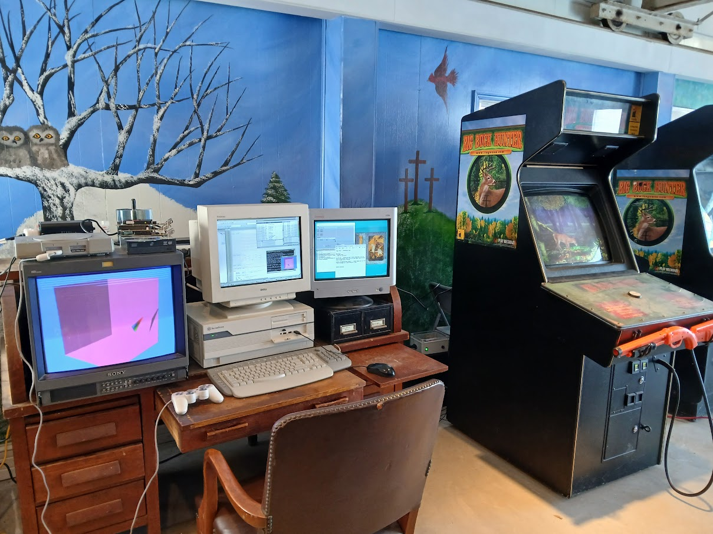
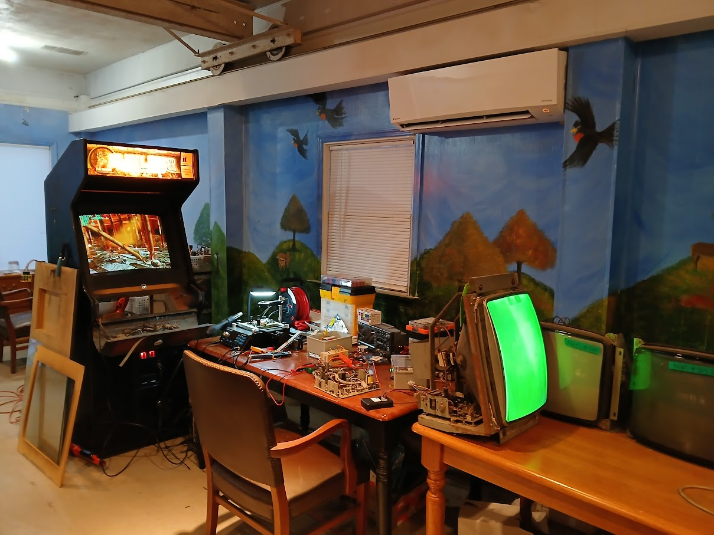
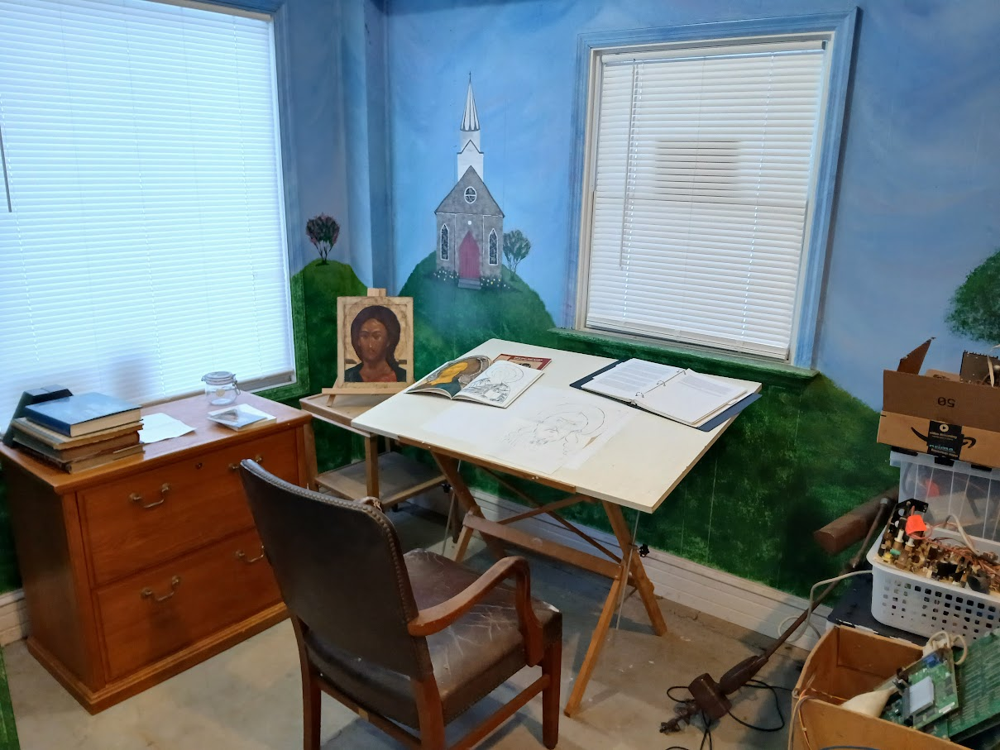
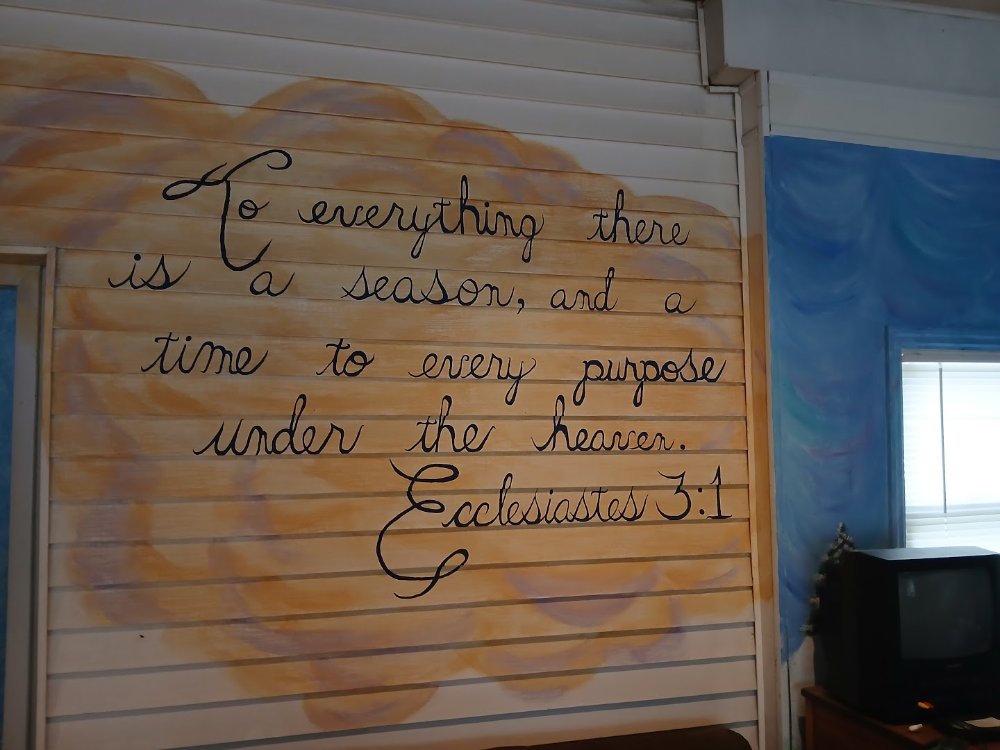

Last summer (2025), I finished school and moved back to West Virginia for the time being. That autumn I mostly spent setting up my studio, in an old building where there used to be a business called "Martinsburg Granite". They carved and sold headstones for graveyards. The building has a basement that's like an industrial area for loading, sandblasting, and carving pretty large amounts of stone. It also has a small office area, and a front showroom where sample graves were shown for sale (most of the samples are actually just graves that people never paid for or picked up, I still have a bunch of them).
The below pictures are of the "showroom" section, which is my main work area now. The basement and other areas are going to absolutely be put to use, especially since now it seems like I'm gravitating towards more physical work (especially woodworking) and video sculpture. I especially love it since the showroom has a large mural of Ecclesiastes 3:1 ("To everything there is a season[...]"), and the walls are covered with very childlike (but still really lovely!) frescoes - each corner of the showroom depicting one of the four different seasons.
All images may be clicked to enlarge.
My desk for Playstation 1 development + some of the working Big Buck Hunter: Restoration cabinets
The more hardware focused part of my studio, a BBH cabinet I'm working on repairing, and some arcade CRT monitors I'm trying to repair.
A corner set up for painting / drawing / iconography practice.
The mural I mentioned. All of the walls + this mural were already painted while the store was still in business and selling headstones.{kind=link}
{kind=link}
{kind=link}
{kind=link}